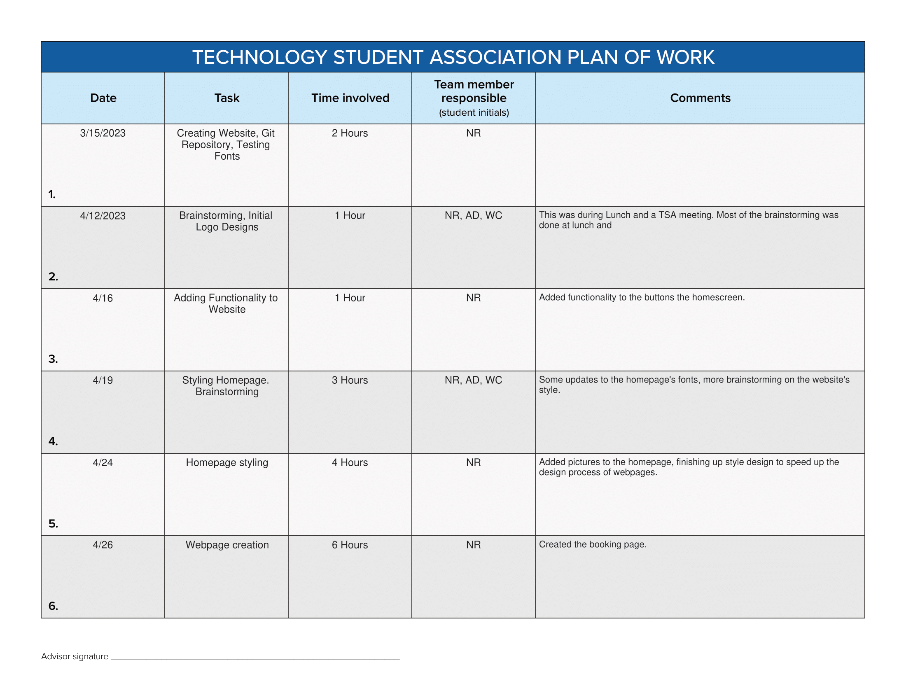
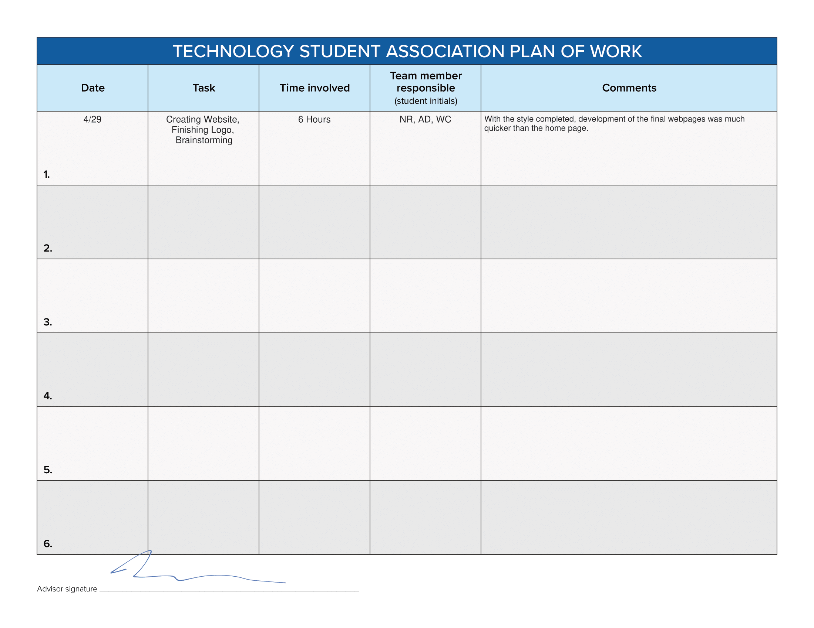

References
Plan of Work Log
 
See in PDF Format:
Link
Links
Rocket Clipart
Northern Lights Photo
STS-129 Launch
The office for Outer Space Affairs
Moon Resort Photo
Mars Resort Photo
Jupiter Info
Boeing X37
Starliner